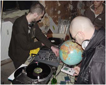

| software |
| home page |
|
|  |
 |
From a total of some 800 entries 16 projects have been shortlisted for three prizes worth 5. The prize winners will be announced and awarded at the ceremony on 9th February 2002. The nominated works will be presented in advance during the festival (exhibition, video screenings, media lounge) and in the competition's special screening. --------------------------------------------------------------------------- 3. --------------------------------------------------------------------------- 4. |
 |